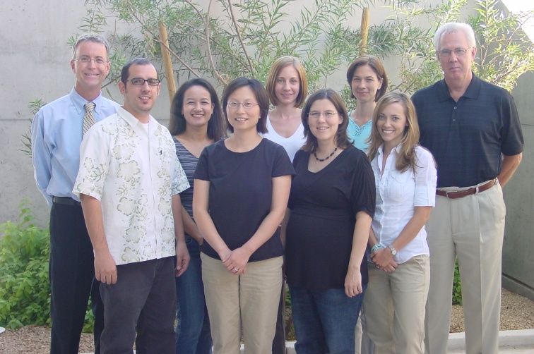

Welcome to the homepage of the PsychoAcoustics Lab at ASU! Our group consists of (pictured left-to-right)
Sid Bacon, Christopher Brown, Kumiko Boike, Kang Li, Nicole Scherrer, Erica Williams, Kate Helms-Tillery,
Farris Walling, and Bill Yost. We are located in the Lattie F. Coor building, on the ASU campus in
Tempe, Arizona.
